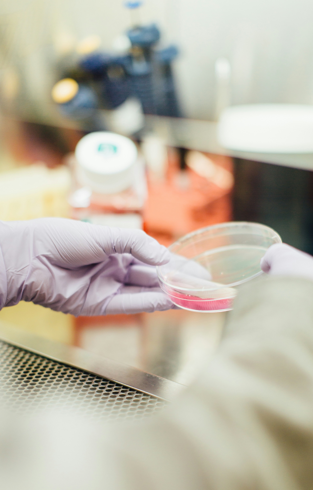

I am currently developing my programming skills and discovering exciting ways to combine science, technology, and creativity. My journey into web development allows me to combine creativity, problem-solving, and my passion for continuous learning.

I have a strong background in microbiology, environmental biology, laboratory techniques, scientific research, and data analysis. My academic experience has helped me develop critical thinking, problem-solving, and analytical skills. I am also expanding my technical skills through web development and programming, including HTML, CSS, JavaScript, and Python. I enjoy combining my scientific knowledge with creativity and technology to explore new ideas and develop practical solutions.
I enjoy cooking and experimenting with recipes from different cultures, exploring new places, and discovering different traditions. I also love reading, listening to music, and learning new things.
Here are some of the projects I have been working on.
A recipe website featuring delicious dishes from different cultures around the world, including traditional African recipes.
A fun and interactive project developed using HTML, CSS, and JavaScript. It gives users random surprises, challenges, and messages.
Feel free to get in touch!